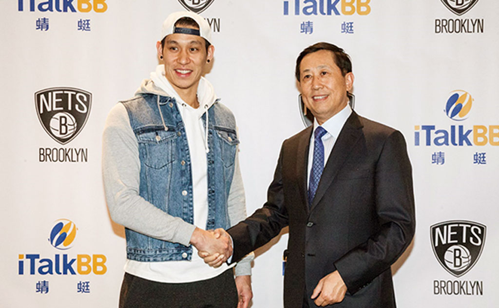
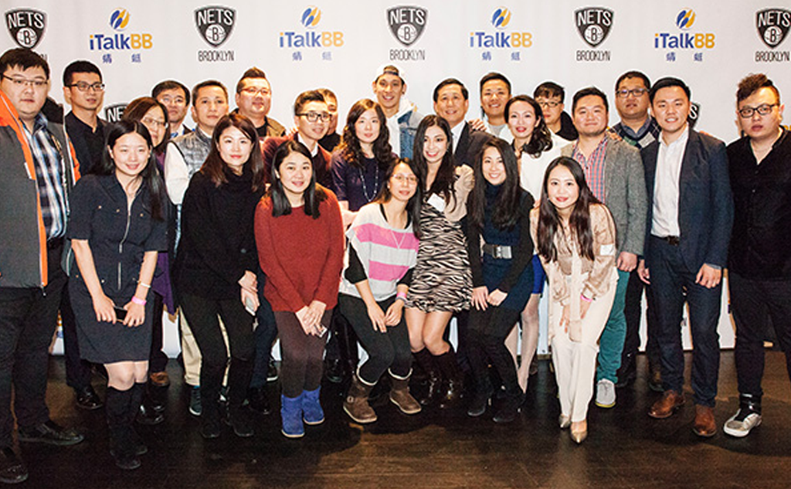

iTalkBB蜻蜓強勢登陸NBA頂級賽事，與林書豪親切會面！
（紐約布魯克林1月6日訊）
讓世界見證iTalkBB蜻蜓品牌的力量
iTalkBB蜻蜓於2016年10月正式與NBA布魯克林籃網隊（Brooklyn Nets）簽約，成為NBA史上第一家為海外華人服務的電信運營商合作夥伴。iTalkBB蜻蜓將與其他國際知名官方合作品牌躋身一列，如耐克、本田汽車、可口可樂、星巴克等。這次與NBA頂級球隊締結戰略合作關係，是iTalkBB蜻蜓震撼業界的又一成就，在未來企業拓展藍圖上留下濃墨重彩的一筆。整個2016-17賽季，籃網隊賽場上最惹人注目的，不僅有林書豪等籃球明星，還有每一場比賽中出現的iTalkBB蜻蜓全新品牌。
除了場內的數萬名現場球迷會看到iTalkBB蜻蜓的標識之外，乃至在全球範圍內、數以億計坐在螢幕前通過CCTV5、騰訊視頻等管道收看球賽轉播的華裔觀眾，也會為NBA賽場上出現了中文品牌名稱而感到自豪。
比賽當天新聞報導
iTalkBB蜻蜓CEO趙捷（Jack Zhao）與林書豪（Jeremy Lin）
iTalkBB蜻蜓員工代表與林書豪（Jeremy Lin）
iTalkBB蜻蜓店內投籃活動獲獎家庭在現場觀看比賽
iTalkBB蜻蜓“曬照片，贏大獎”社交媒體活動獲獎家庭在現場觀看比賽
iTalkBB蜻蜓在今年初，發佈新的中文名稱和logo時，便承諾在為未來的一年中，會為用戶打造更精彩的移動生活。iTalkBB蜻蜓與籃網隊合作，也是旨在提高華裔在主流社會的影響力，通過體育這個管道瞭解和融入主流社會。同時也鼓勵更多海外華人關注體育，以及體育對華人年輕一代成長的影響。
在未來，iTalkBB蜻蜓不僅會聯手籃網隊聯手合作更多回饋華裔的活動，還會在家庭電話和中文電視兩個成功產品的基礎上，推出全新的移動產品，為海外華人提供盡善盡美的服務。更多精彩，敬請期待！